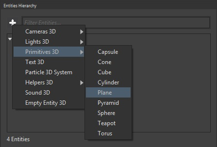

Goal
Within this recipe you will learn how to capture images from a webcam and use it as a texture for an entity of your games.
Hands-on
With Wave Visual Editor
On an empty project, add a plane to the scene:

In Asset Details panel, create a Standard Material with default values and name it CameraMaterial
In Entities Hierarchy panel, select the plane entity that you have previously added, and assign the CameraMaterial in the "MaterialPath" property from MaterialsComponent

Now, open the solution with Visual Studio or Xamarin Studio with the File > Open C# Solution ... menu, and continue reading the next section.
With Visual Studio (for Windows or Mac)
You need to copy the content from here and create the same folder side by side to your solution file. Add this post-build event to launcher project:
copy /Y "$(SolutionDir)Libraries\libvlc.dll" "$(TargetDir)"
copy /Y "$(SolutionDir)Libraries\libvlccore.dll" "$(TargetDir)"
mkdir "$(TargetDir)\plugins"
xcopy "$(SolutionDir)Libraries\plugins" "$(TargetDir)plugins" /e /i /h /y /q
You need to start the built-in Wave Service Camera Capture to initialize the web cam to be able to use it in your game. To do this, add this line in CreateScene method from MyScene class:
WaveServices.CameraCapture.Start(CameraCaptureType.Front);
Last thing you need to do is to modify the standard material you created with Wave Visual Editor, and set the Diffuse texture with the camera output. To do this add these lines after the initialization of the camera service:
StandardMaterial cameraMaterial = this.Assets.LoadModel<MaterialModel>(WaveContent.Assets.CameraMaterial).Material as StandardMaterial;
cameraMaterial.Diffuse = WaveServices.CameraCapture.PreviewTexture;
If you build and run your project, you will see a plane with what the camera is seeing.
Wrap-up
You have learned how to capture a web cam input and use it as a texture in your games.
Note
Take a look at the Camera capture sample on github.